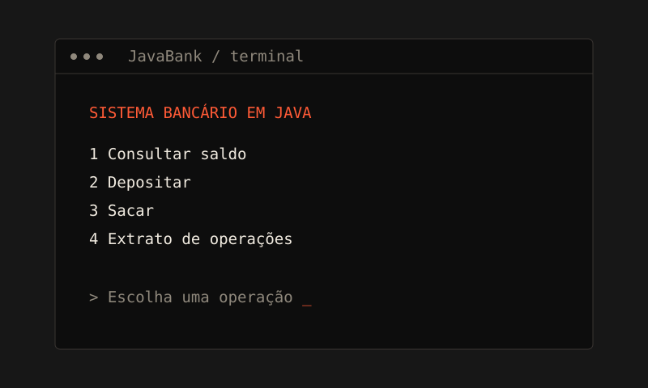
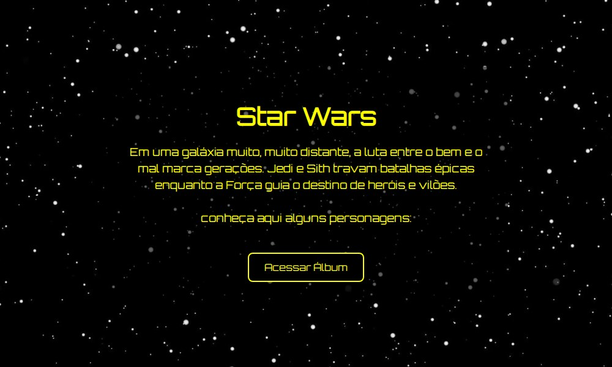

Douglas
Estudante de Desenvolvimento de Software | Foco em Java Back-end.
Técnico em Informática em formação · Brasil
Olá, eu sou Douglas. Sou estudante de Técnico em Informática e tenho interesse em desenvolvimento Back-end, especialmente com Java. Estou construindo minha trajetória na programação através de estudos, desafios e projetos práticos.
APRENDIZADO NA PRÁTICA
- Lógica
- Java
- POO
- Projetos práticos
Olá.
Sou Douglas, também conhecido como Wazzip. Minha trajetória começou na lógica de programação e avançou para Java, orientação a objetos e aplicações. Gosto de resolver exercícios, construir projetos e entender o que acontece em cada linha de código.
Aprendendo, desenvolvendo e evoluindo um código de cada vez.
Formação
- Técnico em Informática
Estudante · formação em andamento.
- Aprendizado contínuo
Estudos, exercícios de lógica e projetos para colocar os conceitos em prática.
Direção
- Back-end com Java
Meu objetivo profissional e o foco dos meus estudos.
- Um passo de cada vez
Agora: Java, POO e estruturas de dados. Depois: SQL, bancos de dados e Spring Boot.
Projetos em prática.
Ver detalhes- 01

Sistema Bancário
Login, saldo, depósitos e saques em Java.
- 02

Star Wars
Um mini site sobre personagens da saga.
Projetos de estudo que fazem parte da minha evolução na programação.